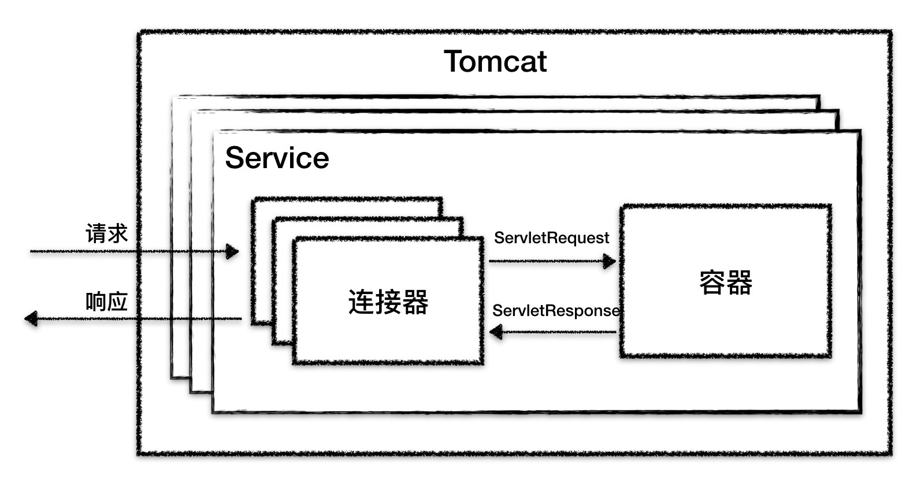

- 00 开篇词 Java程序员如何快速成长？.md.html
- 01 Web容器学习路径.md.html
- 02 HTTP协议必知必会.md.html
- 03 你应该知道的Servlet规范和Servlet容器.md.html
- 04 实战：纯手工打造和运行一个Servlet.md.html
- 05 Tomcat系统架构（上）： 连接器是如何设计的？.md.html
- 06 Tomcat系统架构（下）：聊聊多层容器的设计.md.html
- 07 Tomcat如何实现一键式启停？.md.html
- 08 Tomcat的“高层们”都负责做什么？.md.html
- 09 比较：Jetty架构特点之Connector组件.md.html
- 10 比较：Jetty架构特点之Handler组件.md.html
- 11 总结：从Tomcat和Jetty中提炼组件化设计规范.md.html
- 12 实战：优化并提高Tomcat启动速度.md.html
- 13 热点问题答疑（1）：如何学习源码？.md.html
- 14 NioEndpoint组件：Tomcat如何实现非阻塞I_O？.md.html
- 15 Nio2Endpoint组件：Tomcat如何实现异步I_O？.md.html
- 16 AprEndpoint组件：Tomcat APR提高I_O性能的秘密.md.html
- 17 Executor组件：Tomcat如何扩展Java线程池？.md.html
- 18 新特性：Tomcat如何支持WebSocket？.md.html
- 19 比较：Jetty的线程策略EatWhatYouKill.md.html
- 20 总结：Tomcat和Jetty中的对象池技术.md.html
- 21 总结：Tomcat和Jetty的高性能、高并发之道.md.html
- 22 热点问题答疑（2）：内核如何阻塞与唤醒进程？.md.html
- 23 Host容器：Tomcat如何实现热部署和热加载？.md.html
- 24 Context容器（上）：Tomcat如何打破双亲委托机制？.md.html
- 25 Context容器（中）：Tomcat如何隔离Web应用？.md.html
- 26 Context容器（下）：Tomcat如何实现Servlet规范？.md.html
- 27 新特性：Tomcat如何支持异步Servlet？.md.html
- 28 新特性：Spring Boot如何使用内嵌式的Tomcat和Jetty？.md.html
- 29 比较：Jetty如何实现具有上下文信息的责任链？.md.html
- 30 热点问题答疑（3）：Spring框架中的设计模式.md.html
- 31 Logger组件：Tomcat的日志框架及实战.md.html
- 32 Manager组件：Tomcat的Session管理机制解析.md.html
- 33 Cluster组件：Tomcat的集群通信原理.md.html
- 34 JVM GC原理及调优的基本思路.md.html
- 35 如何监控Tomcat的性能？.md.html
- 36 Tomcat I_O和线程池的并发调优.md.html
- 37 Tomcat内存溢出的原因分析及调优.md.html
- 38 Tomcat拒绝连接原因分析及网络优化.md.html
- 39 Tomcat进程占用CPU过高怎么办？.md.html
- 40 谈谈Jetty性能调优的思路.md.html
- 41 热点问题答疑（4）： Tomcat和Jetty有哪些不同？.md.html
- 特别放送 如何持续保持对学习的兴趣？.md.html
- 结束语 静下心来，品味经典.md.html
- 捐赠
06 Tomcat系统架构（下）：聊聊多层容器的设计
专栏上一期我们学完了连接器的设计，今天我们一起来看一下Tomcat的容器设计。先复习一下，上期我讲到了Tomcat有两个核心组件：连接器和容器，其中连接器负责外部交流，容器负责内部处理。具体来说就是，连接器处理Socket通信和应用层协议的解析，得到Servlet请求；而容器则负责处理Servlet请求。我们通过下面这张图来回忆一下。

容器，顾名思义就是用来装载东西的器具，在Tomcat里，容器就是用来装载Servlet的。那Tomcat的Servlet容器是如何设计的呢？
容器的层次结构
Tomcat设计了4种容器，分别是Engine、Host、Context和Wrapper。这4种容器不是平行关系，而是父子关系。下面我画了一张图帮你理解它们的关系。
你可能会问，为什么要设计成这么多层次的容器，这不是增加了复杂度吗？其实这背后的考虑是，Tomcat通过一种分层的架构，使得Servlet容器具有很好的灵活性。
Context表示一个Web应用程序；Wrapper表示一个Servlet，一个Web应用程序中可能会有多个Servlet；Host代表的是一个虚拟主机，或者说一个站点，可以给Tomcat配置多个虚拟主机地址，而一个虚拟主机下可以部署多个Web应用程序；Engine表示引擎，用来管理多个虚拟站点，一个Service最多只能有一个Engine。
你可以再通过Tomcat的server.xml配置文件来加深对Tomcat容器的理解。Tomcat采用了组件化的设计，它的构成组件都是可配置的，其中最外层的是Server，其他组件按照一定的格式要求配置在这个顶层容器中。
那么，Tomcat是怎么管理这些容器的呢？你会发现这些容器具有父子关系，形成一个树形结构，你可能马上就想到了设计模式中的组合模式。没错，Tomcat就是用组合模式来管理这些容器的。具体实现方法是，所有容器组件都实现了Container接口，因此组合模式可以使得用户对单容器对象和组合容器对象的使用具有一致性。这里单容器对象指的是最底层的Wrapper，组合容器对象指的是上面的Context、Host或者Engine。Container接口定义如下：
public interface Container extends Lifecycle {
public void setName(String name);
public Container getParent();
public void setParent(Container container);
public void addChild(Container child);
public void removeChild(Container child);
public Container findChild(String name);
}
正如我们期望的那样，我们在上面的接口看到了getParent、setParent、addChild和removeChild等方法。你可能还注意到Container接口扩展了Lifecycle接口，Lifecycle接口用来统一管理各组件的生命周期，后面我也用专门的篇幅去详细介绍。
请求定位Servlet的过程
你可能好奇，设计了这么多层次的容器，Tomcat是怎么确定请求是由哪个Wrapper容器里的Servlet来处理的呢？答案是，Tomcat是用Mapper组件来完成这个任务的。
Mapper组件的功能就是将用户请求的URL定位到一个Servlet，它的工作原理是：Mapper组件里保存了Web应用的配置信息，其实就是容器组件与访问路径的映射关系，比如Host容器里配置的域名、Context容器里的Web应用路径，以及Wrapper容器里Servlet映射的路径，你可以想象这些配置信息就是一个多层次的Map。
当一个请求到来时，Mapper组件通过解析请求URL里的域名和路径，再到自己保存的Map里去查找，就能定位到一个Servlet。请你注意，一个请求URL最后只会定位到一个Wrapper容器，也就是一个Servlet。
读到这里你可能感到有些抽象，接下来我通过一个例子来解释这个定位的过程。
假如有一个网购系统，有面向网站管理人员的后台管理系统，还有面向终端客户的在线购物系统。这两个系统跑在同一个Tomcat上，为了隔离它们的访问域名，配置了两个虚拟域名：manage.shopping.com和user.shopping.com，网站管理人员通过manage.shopping.com域名访问Tomcat去管理用户和商品，而用户管理和商品管理是两个单独的Web应用。终端客户通过user.shopping.com域名去搜索商品和下订单，搜索功能和订单管理也是两个独立的Web应用。
针对这样的部署，Tomcat会创建一个Service组件和一个Engine容器组件，在Engine容器下创建两个Host子容器，在每个Host容器下创建两个Context子容器。由于一个Web应用通常有多个Servlet，Tomcat还会在每个Context容器里创建多个Wrapper子容器。每个容器都有对应的访问路径，你可以通过下面这张图来帮助你理解。
假如有用户访问一个URL，比如图中的http://user.shopping.com:8080/order/buy，Tomcat如何将这个URL定位到一个Servlet呢？
首先，根据协议和端口号选定Service和Engine。
我们知道Tomcat的每个连接器都监听不同的端口，比如Tomcat默认的HTTP连接器监听8080端口、默认的AJP连接器监听8009端口。上面例子中的URL访问的是8080端口，因此这个请求会被HTTP连接器接收，而一个连接器是属于一个Service组件的，这样Service组件就确定了。我们还知道一个Service组件里除了有多个连接器，还有一个容器组件，具体来说就是一个Engine容器，因此Service确定了也就意味着Engine也确定了。
然后，根据域名选定Host。
Service和Engine确定后，Mapper组件通过URL中的域名去查找相应的Host容器，比如例子中的URL访问的域名是user.shopping.com，因此Mapper会找到Host2这个容器。
之后，根据URL路径找到Context组件。
Host确定以后，Mapper根据URL的路径来匹配相应的Web应用的路径，比如例子中访问的是/order，因此找到了Context4这个Context容器。
最后，根据URL路径找到Wrapper（Servlet）。
Context确定后，Mapper再根据web.xml中配置的Servlet映射路径来找到具体的Wrapper和Servlet。
看到这里，我想你应该已经了解了什么是容器，以及Tomcat如何通过一层一层的父子容器找到某个Servlet来处理请求。需要注意的是，并不是说只有Servlet才会去处理请求，实际上这个查找路径上的父子容器都会对请求做一些处理。我在上一期说过，连接器中的Adapter会调用容器的Service方法来执行Servlet，最先拿到请求的是Engine容器，Engine容器对请求做一些处理后，会把请求传给自己子容器Host继续处理，依次类推，最后这个请求会传给Wrapper容器，Wrapper会调用最终的Servlet来处理。那么这个调用过程具体是怎么实现的呢？答案是使用Pipeline-Valve管道。
Pipeline-Valve是责任链模式，责任链模式是指在一个请求处理的过程中有很多处理者依次对请求进行处理，每个处理者负责做自己相应的处理，处理完之后将再调用下一个处理者继续处理。
Valve表示一个处理点，比如权限认证和记录日志。如果你还不太理解的话，可以来看看Valve和Pipeline接口中的关键方法。
public interface Valve {
public Valve getNext();
public void setNext(Valve valve);
public void invoke(Request request, Response response)
}
由于Valve是一个处理点，因此invoke方法就是来处理请求的。注意到Valve中有getNext和setNext方法，因此我们大概可以猜到有一个链表将Valve链起来了。请你继续看Pipeline接口：
public interface Pipeline extends Contained {
public void addValve(Valve valve);
public Valve getBasic();
public void setBasic(Valve valve);
public Valve getFirst();
}
没错，Pipeline中有addValve方法。Pipeline中维护了Valve链表，Valve可以插入到Pipeline中，对请求做某些处理。我们还发现Pipeline中没有invoke方法，因为整个调用链的触发是Valve来完成的，Valve完成自己的处理后，调用getNext.invoke来触发下一个Valve调用。
每一个容器都有一个Pipeline对象，只要触发这个Pipeline的第一个Valve，这个容器里Pipeline中的Valve就都会被调用到。但是，不同容器的Pipeline是怎么链式触发的呢，比如Engine中Pipeline需要调用下层容器Host中的Pipeline。
这是因为Pipeline中还有个getBasic方法。这个BasicValve处于Valve链表的末端，它是Pipeline中必不可少的一个Valve，负责调用下层容器的Pipeline里的第一个Valve。我还是通过一张图来解释。

整个调用过程由连接器中的Adapter触发的，它会调用Engine的第一个Valve：
// Calling the container
connector.getService().getContainer().getPipeline().getFirst().invoke(request, response);
Wrapper容器的最后一个Valve会创建一个Filter链，并调用doFilter方法，最终会调到Servlet的service方法。
你可能会问，前面我们不是讲到了Filter，似乎也有相似的功能，那Valve和Filter有什么区别吗？它们的区别是：
Valve是Tomcat的私有机制，与Tomcat的基础架构/API是紧耦合的。Servlet API是公有的标准，所有的Web容器包括Jetty都支持Filter机制。
另一个重要的区别是Valve工作在Web容器级别，拦截所有应用的请求；而Servlet Filter工作在应用级别，只能拦截某个Web应用的所有请求。如果想做整个Web容器的拦截器，必须通过Valve来实现。
本期精华
今天我们学习了Tomcat容器的层次结构、根据请求定位Servlet的过程，以及请求在容器中的调用过程。Tomcat设计了多层容器是为了灵活性的考虑，灵活性具体体现在一个Tomcat实例（Server）可以有多个Service，每个Service通过多个连接器监听不同的端口，而一个Service又可以支持多个虚拟主机。一个URL网址可以用不同的主机名、不同的端口和不同的路径来访问特定的Servlet实例。
请求的链式调用是基于Pipeline-Valve责任链来完成的，这样的设计使得系统具有良好的可扩展性，如果需要扩展容器本身的功能，只需要增加相应的Valve即可。
课后思考
Tomcat内的Context组件跟Servlet规范中的ServletContext接口有什么区别？跟Spring中的ApplicationContext又有什么关系？
不知道今天的内容你消化得如何？如果还有疑问，请大胆的在留言区提问，也欢迎你把你的课后思考和心得记录下来，与我和其他同学一起讨论。如果你觉得今天有所收获，欢迎你把它分享给你的朋友。
© 2019 - 2023 Liangliang Lee. Powered by gin and hexo-theme-book.